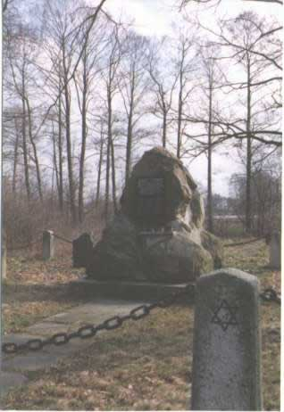

Cmentarz Żydowski (Kirkut) w Radomyślu Wielkim
Obelisk ku czci pomordówanych Żydów na dawnym cmentarzu
żydowskim.
Cmentarz powstał w XIX wieku. Liczy nagrobków: 50. Powierzchnia:
1,3 ha.

Cmentarz, w odległości kilometra od rynku, po prawej stronie drogi do Dąbrówki Wisłockiej Założony w
XIX wieku (najstarszy zachowany nagrobek pochodzi z 1817 roku), powierzchnia 1,3 hektara, nie ogrodzony,
zarośnięty drzewami i krzewami. Niemcy wywieźli większość nagrobków na budowę drogi do Rudy, zachowało
się jednak około 50 nagrobków Zbiorowa mogiła około 500 Żydów z Radomyśla, rozstrzelanych tu przez
Niemców w lipcu 1942 roku. Dwa nagrobki powojenne. W 1987 roku, z inicjatywy Towarzystwa Miłośników
Radomyśla ustawiono głaz z tablicą upamiętniającą śmierć 1300 Żydów Radomyśla.
Cmentarz Założony prawdopodobnie w XVIII wieku, obok nie istniejącej już synagogi, całkowicie
zniszczony, natrafiano tu jednak w ziemi na fragmenty porozbijanych nagrobków.
Mykwa, ul. Targowa, niedaleko od rynku, po prawej stronie ulicy W tylnej części budynku zachował się
komin i pomieszczenie, w którym grzano wodę. Po wojnie w budynku dawnej łaźni żydowskiej urządzono młyn,
obecnie mieści się tu sklep.
Dom rabina, ul. Kościuszki 2 (na rogu rynku) W domu zwanym do dziś Teflówka mieszkał przed wojną na
piętrze rabin Chaim Englam.
Judaica, ul. Kościuszki 2 (na rogu rynku) W dwu salach na parterze urządzono niewielkie muzeum (Izba
Regionalna), w którym eksponowane są pamiątki historii i kultury tutejszych Żydów.
Najdawniejsza wzmianka o Żydach mieszkających w Radomyślu pochodzi z 1602 roku. W 1765 roku było
tutaj przeszło 300 Żydów i już na początku XVIII wieku istniała samodzielna gmina. Był to ważny ośrodek
nauki i myśli żydowskiej. Mieszkał tu np. słynny gaon Szmuel Engel, uczeń cadyka Chaima Halberstama z
Nowego Sącza, w końcu XIX wieku osiedlił się cadyk Abraham Chaim Horowitz, prawnuk Naftalego z Ropczyc.
Z Radomyśla wyjechał do Stanów Zjednoczonych ojciec pisarza amerykańskiego Artura Millera. W roku 1886
mieszkało w Radomyślu 1670 Żydów (53% ludności miasteczka), a w 1939 roku - około 1300 osób. Niemcy
przesiedlili do Radomyśla ludność żydowską z okolicy, skupiając tutaj przeszło 2500 osób. Część Żydów
deportowali do obozy pracy w Pustkowie, część do obozu zagłady w Bełżcu, kilkaset osób rozstrzelali na
cmentarzu żydowskim.